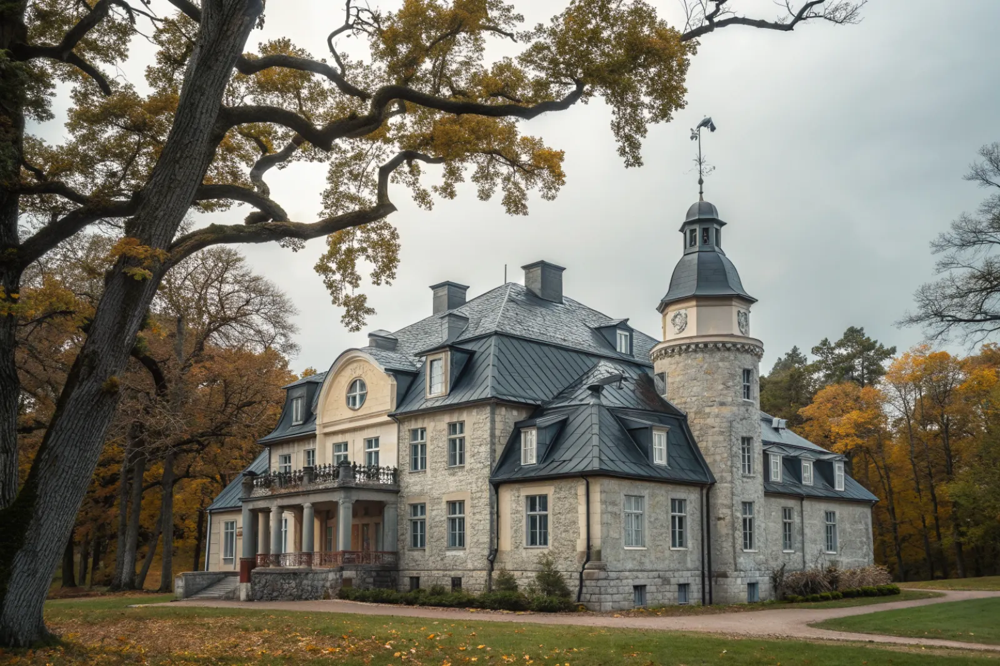

Takbyte i Danderyd
Byte av tegel-, betong- och plåttak.
Takbyte i Danderyd →Danderyd med Djursholm, Stocksund och Enebyberg har några av regionens mest påkostade villor. Vi är takläggare i Danderyd för takbyte, takrenovering och plåtarbeten på villatak.
Danderyd med Djursholm, Stocksund, Enebyberg och Danderyds villastad har några av Stockholmsregionens mest påkostade villor. Här är taken ofta stora och komplexa, med torn, valmar, kupor och detaljerade plåtarbeten som kräver van hand.
Djursholms sekelskiftesvillor har ofta kulturhistoriskt värde där husets uttryck måste bevaras vid takbyte – rätt val av tegel eller plåt och ett varsamt utförande är avgörande. Samtidigt moderniserar vi underlag, tätskikt och avvattning så att taket blir tätt för lång tid framåt.
Komplexa tak innebär fler anslutningar och riskpunkter, och vi lägger särskild vikt vid plåt kring skorstenar, takfönster och genomföringar. Vi arbetar noggrant och dokumenterat, vilket passar den här typen av fastigheter.
Oavsett om du behöver ett komplett takbyte eller en riktad renovering ger vi en tydlig bedömning och offert. Vi arbetar även i grannområden – se alla områden vi arbetar i.

Djursholm, Stocksund och Enebyberg har många större villor från tidigt 1900-tal med komplexa tak: flera takfall, kupor, torn och ränndalar. Lertegel och falsad plåt är vanligast. Komplexa tak har fler anslutningar – och fler ställen där läckage kan uppstå, särskilt i ränndalar och vid kupor.
Danderyds stora tomter med gamla ekar och tallar ger mycket löv och barr i rännorna och skuggiga takfall med påväxt. Kopparplåt och zink förekommer på äldre hus och kräver plåtslagare med erfarenhet av traditionella material.
Delar av Djursholm och Stocksund har detaljplaner med skyddsbestämmelser. Där krävs bygglov även för material-, kulör- och detaljändringar, trots att fasadändringar på villor annars blev lovfria 1 december 2025. Stäm av med Danderyds kommun först.
Stora villor kräver ofta mer ställning och längre byggtid. Vi lägger upp en tidplan med etapper så att huset är tätt varje kväll och arbetet störs så lite som möjligt av väder.
Byte av tegel-, betong- och plåttak.
Takbyte i Danderyd →Riktade åtgärder som förlänger takets liv.
Takrenovering i Danderyd →Bedömning av skick inför beslut.
Takbesiktning i Danderyd →Nytt ytskydd på plåttak.
Takmålning i Danderyd →Skonsam tvätt och mossbehandling.
Taktvätt i Danderyd →Nytt plåttak och plåtarbeten.
Plåttak i Danderyd →Vi utgår från Bromma (Mariehäll), precis intill Sundbyberg, och når Danderyd snabbt. Det gör att vi kan komma ut på besiktning utan långa väntetider och hålla nära kontakt genom hela projektet.
Läs mer om tak på villa eller jämför takbyte och takrenovering innan du bestämmer dig.
Vi arbetar även i Täby.
Takläggare i Täby →Vi arbetar även i Solna.
Takläggare i Solna →Vi arbetar även i Lidingö.
Takläggare i Lidingö →Vi arbetar även i Sollentuna.
Takläggare i Sollentuna →Vi arbetar även i Österåker.
Takläggare i Österåker →